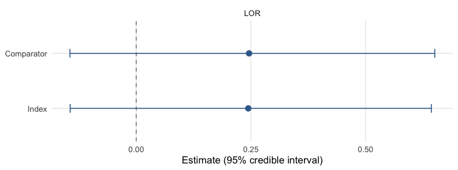

Choosing a method: ML-UMR, STC, and naive
Source:vignettes/choosing-a-method.Rmd
choosing-a-method.RmdUnanchored indirect comparisons rest on strong, partly untestable
assumptions, so running several methods and comparing them is itself a
sensitivity analysis. mlumr offers four estimators behind one data
interface; this vignette explains what each assumes, how to compare
them, and which to report. For the mechanics of fitting see
vignette("fitting-and-diagnostics"); for family-specific
worked examples see the per-outcome vignettes. We illustrate with the
real plaque-psoriasis binary endpoint (PASI 75; UNCOVER-2 ixekizumab vs
FIXTURE secukinumab) (Griffiths et al. 2015; Langley et al. 2014).
| Method | Adjustment | Framework | Key assumption | Target population |
|---|---|---|---|---|
| Naive | none | frequentist | populations exchangeable | none (unstandardized contrast) |
| STC | one-arm outcome regression (G-computation) | frequentist | correct, applicable IPD outcome model | comparator |
| ML-UMR SPFA | joint Bayesian model | Bayesian | shared prognostic effects (SPFA) | index and comparator |
| ML-UMR relaxed | joint Bayesian model | Bayesian | correct + identified treatment-specific effects | index and comparator |
The naive estimate is an unadjusted contrast of two samples rather
than an effect standardized to any population. stc()
standardizes the index-treatment outcome to the comparator population
and contrasts it with the observed comparator outcome there. It does not
standardize either treatment to the index population. Treating that
comparator-population effect as the index or decision target requires a
separate effect-equality assumption (Phillippo et al. 2016; Chandler and Ishak 2026).
ML-UMR explicitly standardizes both treatment models to each reported
target. Its validity still depends on the fitted outcome model, overlap,
and the stated cross-treatment assumptions.
A shared dataset
All four estimators run from the same mlumr_data object,
so we build it once, the plaque-psoriasis PASI 75 endpoint (UNCOVER-2
ixekizumab vs FIXTURE secukinumab) with three prognostic covariates:
library(mlumr)
data("psoriasis_ipd") # bundled with mlumr (from multinma, GPL-3)
data("psoriasis_agd")
covs <- c("age", "bsa", "weight")
ipd <- psoriasis_ipd
ipd$bsa <- ipd$bsa / 100; ipd$weight <- ipd$weight / 10
ipd <- ipd[ipd$study == "UNCOVER-2" & ipd$treatment == "IXE_Q4W", ]
ipd <- ipd[stats::complete.cases(ipd[, c("pasi75", covs)]), ]
agd <- psoriasis_agd
agd$bsa_mean <- agd$bsa_mean / 100; agd$bsa_sd <- agd$bsa_sd / 100
agd$weight_mean <- agd$weight_mean / 10; agd$weight_sd <- agd$weight_sd / 10
agd <- agd[agd$study == "FIXTURE" & agd$treatment == "SEC_300", ]
dat <- combine_data(
set_ipd(ipd, treatment = "treatment", outcome = "pasi75", covariates = covs),
set_agd(agd, treatment = "treatment", outcome_n = "pasi75_n", outcome_r = "pasi75_r",
cov_means = c("age_mean", "bsa_mean", "weight_mean"),
cov_sds = c("age_sd", "bsa_sd", "weight_sd"),
cov_types = c("continuous", "continuous", "continuous")))
# `bsa` was rescaled to a proportion above, so its marginal has to respect
# (0, 1). A normal marginal puts integration points outside that range;
# `vignette("binary-outcomes")` uses the logit-normal for the same reason.
dat <- add_integration(dat, n_int = 64,
age = distr(qnorm, mean = age_mean, sd = age_sd),
bsa = distr(qlogitnorm, mean = bsa_mean, sd = bsa_sd),
weight = distr(qgamma, shape = weight_mean^2 / weight_sd^2,
rate = weight_mean / weight_sd^2))Naive and STC
The naive estimate compares crude outcomes with no covariate adjustment. It serves as a benchmark, and it is biased when the two studies differ on prognostic covariates or on other determinants of the outcome; a difference in the distribution of a variable unrelated to the outcome does not by itself induce bias. STC fits an outcome regression on the IPD and predicts outcomes under the index treatment in the comparator population by G-computation. The response-scale averaging follows Ren et al.’s one-arm unanchored STC and the marginalization order used by Remiro-Azocar et al. (Ren et al. 2024; Remiro-Azocar et al. 2022). The non-survival delta-method SE is conditional on the supplied integration grid and reported covariate summaries; it does not reproduce Ren et al.’s bootstrap of both the IPD fit and reconstructed target distribution.
res_naive <- naive(dat)
res_stc <- stc(dat)
res_naive
#> Naive Unadjusted Indirect Comparison
#> =====================================
#>
#> Treatments: IXE_Q4W vs SEC_300
#>
#> Population basis: index-study outcome versus comparator-population outcome; no common standardized target.
#>
#> Event rates:
#> Index (IPD): 0.774 (267/345)
#> Comparator (AgD): 0.771 (249/323)
#>
#> Log Odds Ratio: 0.0172 (SE: 0.1846)
#> 95% CI: [-0.3448, 0.3791]
#>
#> All effect measures (95% CI):
#> Log odds ratio 0.0172 (SE 0.1846) [-0.3448, 0.3791]
#> Odds ratio 1.0173 [0.7084, 1.4609]
#> Risk difference 0.0030 (SE 0.0325) [-0.0606, 0.0666]
#> Risk ratio 1.0039 [0.9245, 1.0901]
res_stc
#> Simulated Treatment Comparison (G-computation)
#> ===============================================
#>
#> Treatments: IXE_Q4W vs SEC_300
#>
#> Estimand population: comparator
#> Treating this as the index-population effect requires a separate effect-equality assumption; this calculation does not transport to the index population.
#>
#> Marginalized P(Y=1|index trt, comp pop): 0.8111
#> Observed P(Y=1|comp trt, comp pop): 0.7709
#>
#> Log Odds Ratio: 0.2437 (SE: 0.2021)
#> 95% CI: [-0.1524, 0.6399]
#>
#> All effect measures (95% CI):
#> Log odds ratio 0.2437 (SE 0.2021) [-0.1524, 0.6399]
#> Odds ratio 1.2760 [0.8586, 1.8962]
#> Risk difference 0.0402 (SE 0.0331) [-0.0246, 0.1050]
#> Risk ratio 1.0521 [0.9693, 1.1421]
#>
#> Outcome model coefficients:
#> (Intercept) age bsa weight
#> 4.4675 -0.0400 0.0848 -0.1430ML-UMR (SPFA and relaxed)
The two Bayesian models share the same data interface and differ only in whether the prognostic coefficients are shared across treatments (SPFA) or allowed to be treatment-specific (relaxed, permitting effect modification):
fit_spfa <- mlumr(dat, model = "spfa",
prior_beta = prior_normal(0, 2.5, autoscale = TRUE),
chains = 4, iter = 2000, warmup = 1000, seed = 2026, refresh = 0)
#> Running MCMC with 4 parallel chains...
#>
#> Chain 1 finished in 0.5 seconds.
#> Chain 2 finished in 0.5 seconds.
#> Chain 3 finished in 0.5 seconds.
#> Chain 4 finished in 0.5 seconds.
#>
#> All 4 chains finished successfully.
#> Mean chain execution time: 0.5 seconds.
#> Total execution time: 0.8 seconds.
fit_relaxed <- mlumr(dat, model = "relaxed",
prior_beta = prior_normal(0, 2.5, autoscale = TRUE),
chains = 4, iter = 2000, warmup = 1000, seed = 2026, refresh = 0)
#> Running MCMC with 4 parallel chains...
#>
#> Chain 1 finished in 2.4 seconds.
#> Chain 2 finished in 2.8 seconds.
#> Chain 4 finished in 2.7 seconds.
#> Chain 3 finished in 2.9 seconds.
#>
#> All 4 chains finished successfully.
#> Mean chain execution time: 2.7 seconds.
#> Total execution time: 3.1 seconds.A comparison table
All four methods, on the log odds ratio. ML-UMR is reported in both target populations. STC has a comparator-population estimand by construction; naive has no single standardized target and is labeled accordingly. Neither has an index-population row to show. The index population is normally the decision-relevant one for HTA, because cost-effectiveness models are built for the population a reimbursement decision is about, which is usually the index trial’s (Chandler and Ishak 2026); the comparator rows are the like-for-like comparison against naive and STC.
me_spfa <- marginal_effects(fit_spfa, effect = "lor", population = "both")
me_rel <- marginal_effects(fit_relaxed, effect = "lor", population = "both")
# One row per (model, population); `pop()` pulls the requested one.
pop <- function(d, which) d[d$population == which, ]
comparison <- data.frame(
Method = c("Naive", "STC", "ML-UMR SPFA", "ML-UMR SPFA",
"ML-UMR relaxed", "ML-UMR relaxed"),
Population = c("unstandardized", "comparator", "index", "comparator",
"index", "comparator"),
LOR = c(res_naive$link_effect, res_stc$link_effect,
pop(me_spfa, "Index")$mean, pop(me_spfa, "Comparator")$mean,
pop(me_rel, "Index")$mean, pop(me_rel, "Comparator")$mean),
CI_lower = c(res_naive$ci_lower, res_stc$ci_lower,
pop(me_spfa, "Index")$q2.5, pop(me_spfa, "Comparator")$q2.5,
pop(me_rel, "Index")$q2.5, pop(me_rel, "Comparator")$q2.5),
CI_upper = c(res_naive$ci_upper, res_stc$ci_upper,
pop(me_spfa, "Index")$q97.5, pop(me_spfa, "Comparator")$q97.5,
pop(me_rel, "Index")$q97.5, pop(me_rel, "Comparator")$q97.5)
)
knitr::kable(comparison, caption = "PASI 75 log odds ratio by method, in both target populations")| Method | Population | LOR | CI_lower | CI_upper |
|---|---|---|---|---|
| Naive | unstandardized | 0.0171520 | -0.3447542 | 0.3790582 |
| STC | comparator | 0.2437223 | -0.1524312 | 0.6398759 |
| ML-UMR SPFA | index | 0.2442120 | -0.1440524 | 0.6435369 |
| ML-UMR SPFA | comparator | 0.2459988 | -0.1446246 | 0.6508805 |
| ML-UMR relaxed | index | -0.0211377 | -1.2249046 | 1.0791852 |
| ML-UMR relaxed | comparator | 0.2470542 | -0.1473308 | 0.6289507 |
forest_df <- with(comparison,
data.frame(label = paste0(Method, " (", Population, ")"),
est = LOR, lo = CI_lower, hi = CI_upper))
mlumr_forest(forest_df, ref_line = 0,
x = "Log odds ratio",
title = "Methods compared: ixekizumab vs secukinumab",
subtitle = "ML-UMR shown in both target populations")
plot of chunk forest
The same ML-UMR posteriors straight from
marginal_effects(), whose plot() method shows
both populations by default:
plot(marginal_effects(fit_spfa, effect = "lor"))
plot of chunk posterior-both
Interpreting the differences
- Naive vs STC, the gap reflects the combined effects of standardization, outcome-model specification, and the different target definitions. Agreement does not establish exchangeability, and disagreement is not attributable to one covariate without further analysis.
- STC vs ML-UMR SPFA, both use the named covariates, but they fit different likelihoods and make different cross-treatment assumptions. Similarity is a useful benchmark, not an expected mathematical identity. ML-UMR reports explicitly standardized effects in both populations.
-
SPFA vs relaxed, the relaxed model frees prognostic
effects to differ by treatment (
delta_beta); a markedly different effect may signal effect modification, but the comparator coefficients are weakly identified with sparse AgD, so checkdelta_betaandprior_sensitivity(). - Index vs comparator within the relaxed model, note how much wider the index-population interval is than the comparator one in the table above. The comparator coefficients are informed by a single aggregate row, and the index-population estimand extrapolates them over the IPD covariate distribution, so the width is the identification problem showing itself. Under SPFA the two populations agree closely instead, because the coefficients are shared and anchored by the IPD.
Model comparison
Information criteria compare approximate predictive fit; they do not validate SPFA, effect modification, or transportability. We compare SPFA against the relaxed model by leave-one-out cross-validation and DIC:
compare_models(SPFA = fit_spfa, Relaxed = fit_relaxed, criterion = "loo")
#>
#> Model Comparison (LOO)
#> ======================
#>
#> model elpd_diff se_diff p_worse diag_diff diag_elpd
#> Relaxed 0.0 0.0 NA 1 k_psis > 0.7
#> SPFA -0.2 0.1 0.99 |elpd_diff| < 4 1 k_psis > 0.7
#>
#> elpd_diff is the difference in expected log pointwise predictive
#> density vs the best model. se_diff > 2 is the conventional threshold
#> for a meaningful difference (|elpd_diff| > 4 * se_diff is stronger).
compare_models(SPFA = fit_spfa, Relaxed = fit_relaxed) # DIC-based (the default)
#>
#> Model Comparison (DIC)
#> ======================
#>
#> Model DIC pD Delta_DIC
#> Relaxed 366.10 4.84 0.00
#> SPFA 366.17 4.74 0.07
#>
#> Lower DIC = better fit. Delta_DIC > 5 is a rough heuristic for
#> meaningful difference, not a formally calibrated threshold.
#> DIC should not be the sole basis for model selection.LOO/WAIC are preferred over DIC where available; treat a
better-fitting relaxed model as suggestive of effect
modification, not proof, corroborate with delta_beta, prior
sensitivity, and clinical plausibility. Treat these as
approximate fit diagnostics rather than exact predictive
scores: each aggregate-data row enters the pointwise log-likelihood as a
single independent observation, so LOO/WAIC do not reflect the grouped
(study-level) structure of the comparator evidence and can be optimistic
when the AgD is clustered.
Decision guide
-
Is there a common comparator arm? If the two trials
share an arm, run an anchored analysis instead: a network
meta-analysis, or ML-NMR via
multinmawhen the populations differ. Randomization is doing work there that nothing below replaces. Reserve ML-UMR for evidence that is genuinely unanchored.vignette("binary-outcomes")andvignette("survival-outcomes")each end by restoring the common arm their example discards and checking the unanchored answer against two anchored ones, a Bucher indirect comparison and an ML-NMR fitted withmultinma, each in both a prognostic-only and a treatment-interaction form. - Are the two populations exchangeable on prognostic factors? Similar reported marginal means are weak evidence for this: higher moments, the dependence between covariates, and unreported prognostic variables all matter, and none is visible in a baseline table. Treat the naive estimate as a benchmark rather than a candidate primary analysis unless exchangeability is defensible on substantive grounds.
-
Is the SPFA plausible? If it is the prespecified
scientific assumption, ML-UMR SPFA can be the primary analysis and the
relaxed model can probe that assumption. If uncertain, fit both. Before
reading anything into a disagreement, check that the relaxed model is
identified, with
check_identification()on the data (binomial, normal, and poisson; it refuses survival, where a reconstructed curve is not a scalar subgroup summary) andprior_sensitivity()on the fit. Where the aggregate evidence is weak, a divergence between the two is evidence about identification, not about effect modification, and the relaxed index-population estimate belongs in a sensitivity analysis. - Presentation. Choose the estimator that is scientifically defensible first, then adapt how it is presented. Where a frequentist summary is expected, STC can be reported alongside ML-UMR rather than in place of it.
Always report the naive estimate as a benchmark, and report ML-UMR diagnostics (divergences, Rhat, ESS) alongside the estimates.